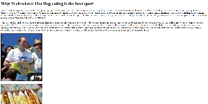

Alfred Pacicco, CSCE242 Web Applications
Assignment 1: Basic HTML
This assignment was designed for the student to become more accustomed to the extreme basics of HTML, which include uploading photos, text, and creating lists and links.
Assignment 2: Basic CSS
.jpg)
This assignment was for the student to become familiar with style sheets, as well as figure out which color schemes fit best. We also put borders around photos and created a table.
Assignment 3: Page Layout
.jpg)
This assignment tested the students ability to properly line images up as well as create and properly format an entire web page. Columns were also created.
Assignment 5: Recreate CSS Page
.jpg)
This assignment tested the students' ability to copy a professionaly made wbesite to the best of their ability.
Assignment 6: JavaScript
.jpg)
This assignment was my class's introduction to JavaScript, which allowed us to animate objects and make a more interactive website.
Assignment 7: If-Statements JavaScript
.jpg)
This assignment was my class's introduction to If Statements and color gradients, which allowed us to color objects and make a more interactive website.